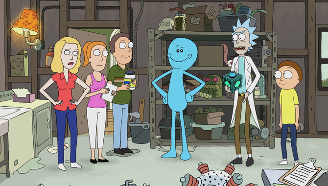
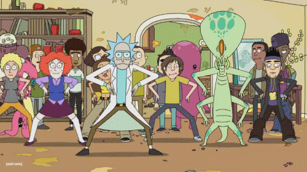

Main Characters

About The Show
Rick and Morty is an American adult animated science-fiction sitcom created by Justin Roiland and Dan Harmon for Cartoon Network's late-night programming block Adult Swim. The series follows the misadventures of cynical mad scientist Rick Sanchez and his fretful, easily influenced grandson Morty Smith, who split their time between domestic life and interdimensional adventures. The series premiered on December 2, 2013, and the third season concluded on October 1, 2017. A fourth season has been mentioned, first by Harmon in a September 2017 interview, and later in the post-credits scene of the third season's finale.
Roiland voices the eponymous characters, with Chris Parnell, Spencer Grammer, and Sarah Chalke voicing the rest of the family. The series originated from an animated short parody film of Back to the Future, The Real Animated Adventures of Doc and Mharti, created by Roiland for Channel 101, a short film festival co-founded by Harmon. When Adult Swim approached Harmon for television show ideas, he and Roiland decided to develop a program based on the short. The series has received universal acclaim for its originality, creativity and humor.
Themes and analysis
Rick and Morty has been described as "a never-ending fart joke wrapped around a studied look into nihilism."[25] The series addresses the insignificance of human existence as compared to the size of the universe, with no recognizable divine presence, as described by Lovecraft's philosophy of cosmicism. The characters of the show find ways to deal with cosmic horror and existential dread, either by asserting the utility of science over magic or by choosing a life in ignorant bliss.
Co-creator Dan Harmon, talking about the philosophy guiding the show and Rick's nihilistic apathy, stated that "the knowledge that nothing matters, while accurate, gets you nowhere." To find a sense of purpose and live a better life, one needs to focus on human relationships and experiences, and not preoccupy our minds with unanswerable questions. According to Harmon, this contrast is evident in the final scene of "Auto Erotic Assimilation", where Jerry is joyfully removing the weeds from his driveway, while Rick appears in the background passed out drunk, after a failed suicide attempt.
Other philosophies that have been referenced in the characters' behavior and observations include: existentialism,[30] anarchism,[31] absurdism,[32] and the work of Friedrich Nietzsche.
Critical Reception
Rick and Morty has received universal critical acclaim, holding a 97% approval rating by critics on review aggregator website Rotten Tomatoes.[49] Additionally, the first season of Rick and Morty holds a Metacritic score of 85 based on eight reviews, indicating "universal acclaim".[46] David Weigand of San Francisco Chronicle described it as "offbeat and occasionally coarse... the take-away here is that it works". He praised the animation direction by James McDermott for being "fresh, colorful and as wacky as the script", and states that the series possesses "shades of Futurama, South Park and even Beetlejuice", ultimately opining that its humor felt "entirely original".

Neil Genzlinger of The New York Times praised the series and stated that it was "Grandparenting at its unhinged finest."[51] Todd Spangler of Variety gave the series a lukewarm review; while he found the series was passable, he contrasted it with other Adult Swim series as "often seems overly reliant on simply being frenetic at the expense of being witty" and enjoyed it as "a welcome attempt to dream just a little bigger".[52] David Sims of The A.V. Club gave the series an "A−". In reviewing the first two episodes, he complimented the animation for its "clean, simple style". He stated that while the series has "a dark, sick sensibility", he praised its "effort to give each character a little bit of depth", further applauding Roiland's voice talent for the eponymous characters.[53] The third season of Rick and Morty was the highest rated comedy show on television with adults, delivering the highest ratings in Adult Swim's history.